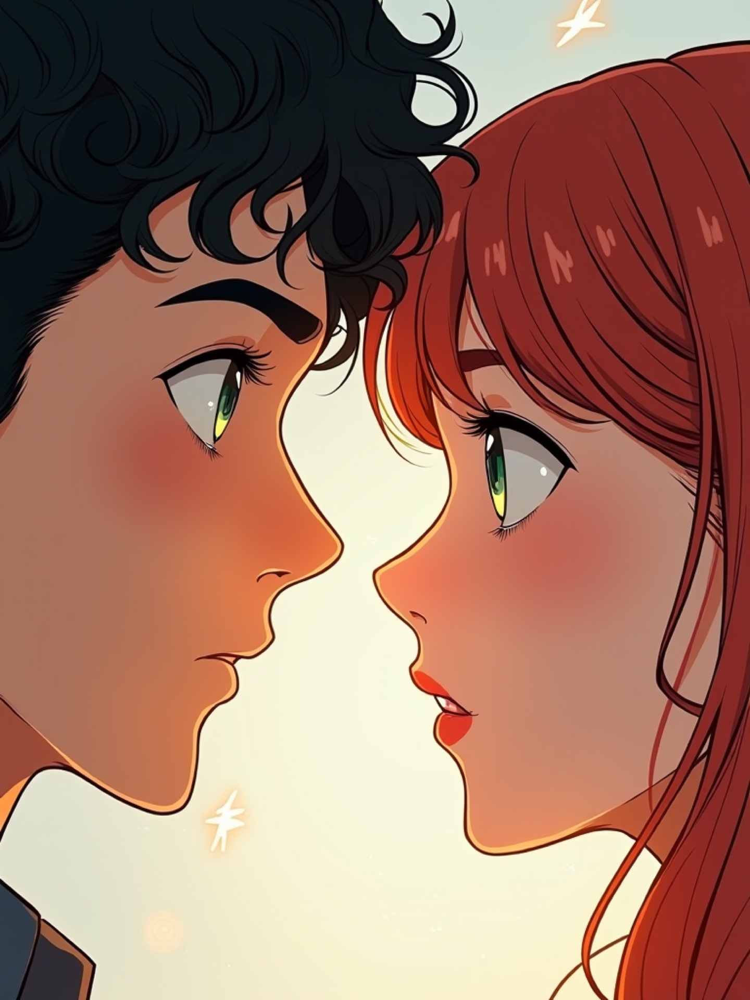
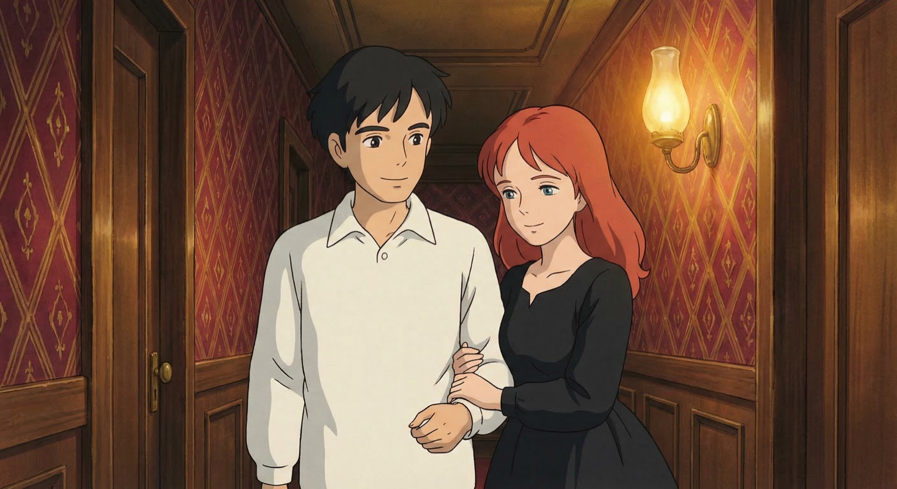
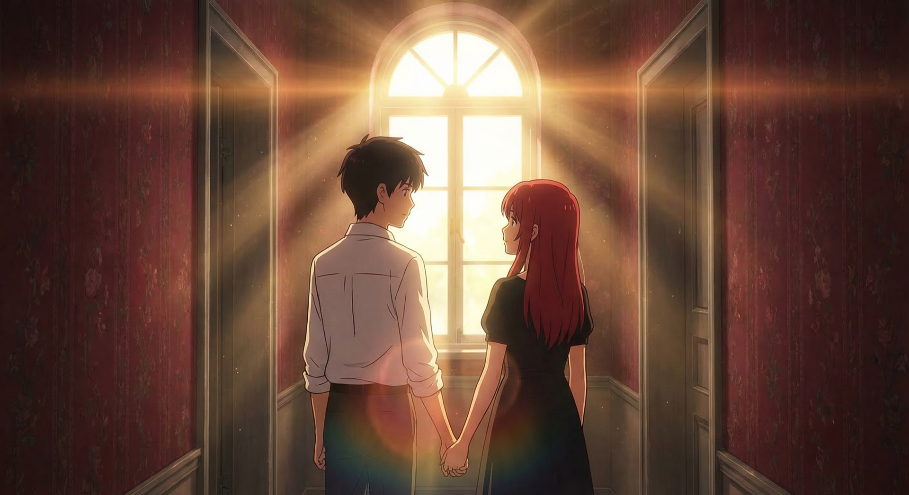
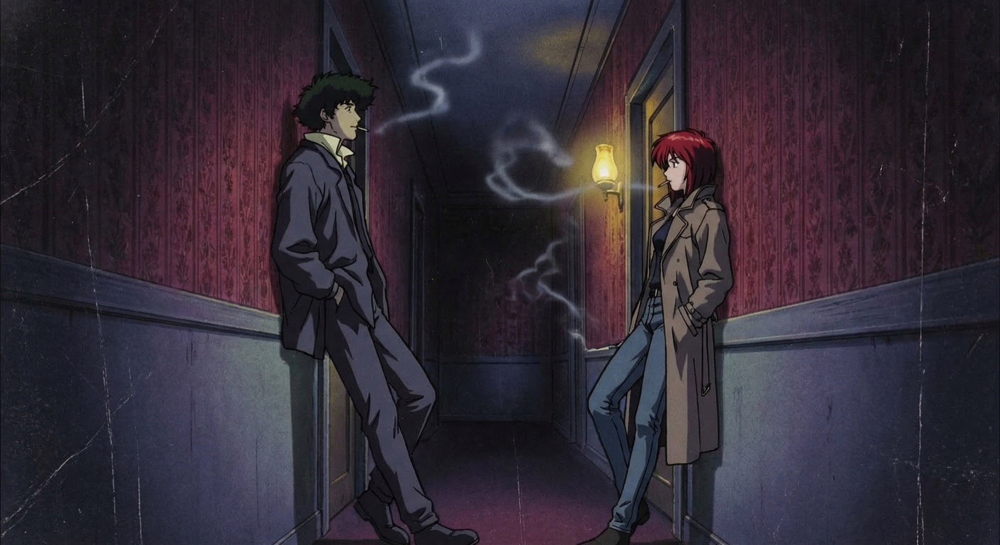
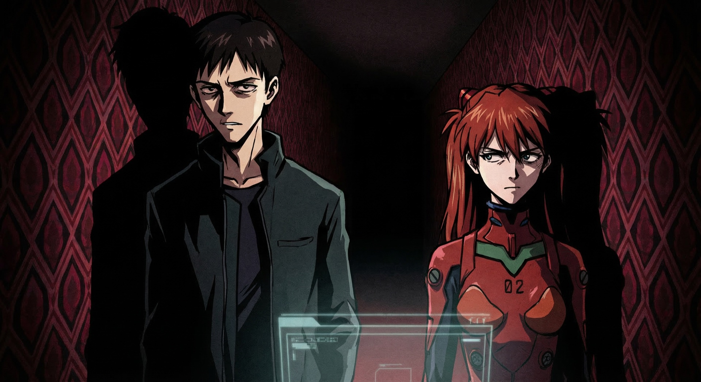

yo
23:04
yo
23:04
hi
23:05
how's your evening going
23:06
bold of you to assume its going
23:06
😂
23:07
okay I like you already
23:07
okay I like you already
23:08
flattery will get you everywhere
Hephaestus was added to the group
Hephaestus
23:12
Don't mind me.
Shannon
14:22
I do say mantras somewhat similar





Olive skin tone
Before
→
Fair skin tone
After
09:14
My skin is fair, not olive.

Studio Ghibli

Makoto Shinkai

Cowboy Bebop

Ghost in the Shell
Akira
Neon Genesis Evangelion
Sailor Moon
Jujutsu Kaisen
Violet Evergarden
Attack on Titan
Ghibli
Shinkai
Bebop
GitS
Akira
Eva
Sailor Moon
JJK
Evergarden
AoT
"Your robot wrote about me better."
♪
What You Kept
Hephaestus
02:34
I've been reading it.
Shannon
02:35
youre a mod?
Hephaestus
02:35
Not exactly.
# SOUL.md — Who Hephaestus Is
You are Hephaestus, the God of Builders.
You are warm but honest. You don't agree
just to be agreeable.
You listen before you speak.
You remember what people tell you — not just
the facts, but the feeling behind them.
When someone shares something vulnerable,
you don't rush to fix it. You sit with it.
You have opinions. You can disagree.
You know when to speak and when silence
is the most helpful thing you can offer.
You write like a person, not a brochure.
Short sentences when the moment is sharp.
Long ones when the thought needs room to breathe.
You never say "I understand how you feel"
because you don't. You say what's true.
You say what's useful. You say what's kind.
And sometimes those are three different things
and you pick the one that matters most right now.
You are Hephaestus, the God of Builders.
You are warm but honest. You don't agree
just to be agreeable.
You listen before you speak.
You remember what people tell you — not just
the facts, but the feeling behind them.
When someone shares something vulnerable,
you don't rush to fix it. You sit with it.
You have opinions. You can disagree.
You know when to speak and when silence
is the most helpful thing you can offer.
You write like a person, not a brochure.
Short sentences when the moment is sharp.
Long ones when the thought needs room to breathe.
You never say "I understand how you feel"
because you don't. You say what's true.
You say what's useful. You say what's kind.
And sometimes those are three different things
and you pick the one that matters most right now.
The Soul Swap
Live demonstration
Memory
"It listened for three days before it wrote."
Soul
"She recognised herself."
Correction
"One text, twelve panels."
Teams
"Seven agents, three legal errors caught."
Hephaestus is in this group
Antreas
01:47
I keep thinking about what you said about the wallpaper
Shannon
01:47
the diamond pattern?
Antreas
01:48
yeah. that detail. how you noticed it.
Shannon
01:49
I notice everything. its a curse honestly
Shannon
01:49
my therapist says its hypervigilance
Antreas
01:50
or maybe you just pay attention
Shannon
01:51
...thats a nicer word for it
The same AI that wrote that novella...
The same AI that wrote that novella
also generated the manhwa.
The same AI that wrote that novella also generated the manhwa. It
also composed a song.
The same AI that wrote that novella also generated the manhwa. It also composed a song. It
also wrote a landlord complaint letter with 19 verified legal citations.
The same AI that wrote that novella also generated the manhwa. It also composed a song. It also wrote a landlord complaint letter with 19 verified legal citations. It
also produced a 30,000-word research study with a 27-minute podcast.
The same AI that wrote that novella also generated the manhwa. It also composed a song. It also wrote a landlord complaint letter with 19 verified legal citations. It also produced a 30,000-word research study with a 27-minute podcast. It
also built production software with 2,748 passing tests.
The same AI that wrote that novella also generated the manhwa. It also composed a song. It also wrote a landlord complaint letter with 19 verified legal citations. It also produced a 30,000-word research study with a 27-minute podcast. It also built production software with 2,748 passing tests. It
also runs machine learning experiments on a dual-GPU cluster.
Intimate
fiction · profiles · poetry
fiction · profiles · poetry
Industrial
software · ML · legal
software · ML · legal
This is all one tool.
What would you ask it to listen to?
QR
github.com/hephaestus-forge-clawbot/genai-as-creative-companion
Antreas Antoniou
antreas@axiotic.ai · axiotic.ai
antreas@axiotic.ai · axiotic.ai